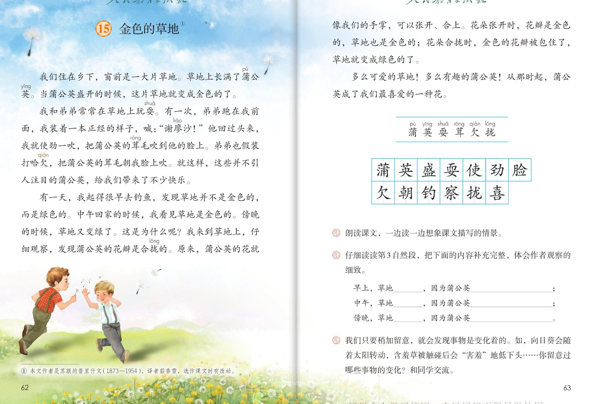

×
🔊 手机听不到声音怎么办？
① 先把手机
媒体音量调大 ，确认没开静音、没连蓝牙耳机；在微信里打开的，点右上角「⋯ → 用浏览器打开」。
② 还是没声音？到应用商店免费下载
Microsoft Edge 浏览器 （它自带朗读发声），用它打开本页面就能出声。
③ 换了 Edge 仍然没声音，说明这部手机的
硬件/系统不支持 网页朗读（多为老旧机型）；近几年买的新手机一般都能正常播放。
→ 打开声音自检
🌼 第 15 课《金色的草地》· 有声图文带读
统编版语文 · 第五单元·阅读 · 课本 P62~63 · 作者：[苏联] 普里什文 · 素养升级版（对标 2022 课标第二学段）
课文 4 个自然段
素养目标 4
会认字 5
会写字 13
听写词 12
观察探究 6 卡
深入理解 8 题
本课本领 发现变化·细致观察
🎧 这样学（可随时点任意一句、一个字、一个词单独听）： ① 听读课文 ——一句一句读，读到哪一句哪一句发光；边读边想：草地的颜色是怎么变化的？为什么？② 学字词 ——5 个会认字、13 个会写字，点一个读一个。③ 词语·听写 ——听写 12 个课文词（读两遍→你写→报答案→听示范句），再听 4 组近义词辨析。④ 深入理解 ——8 道题（认知 / 理解 / 运用 / 拓展），先想后看。⑤ 分角色朗读 ——旁白、小观察员、弟弟、解说员，读出发现变化的惊喜。🌟 本单元任务：体会作者是怎样留心观察周围事物的；仔细观察，把观察所得写下来！
📌 本单元语文要素 ——单元导语（P59 照录）：生活中不缺少美，只是缺少发现美的眼睛。——[法国] 罗丹 ；要点：体会作者是怎样留心观察周围事物的 ；仔细观察，把观察所得写下来 。上一课观察样子和动作 ，本课观察事物的变化 。
🀄 文化自信
🀄 文化自信
读苏联作家普里什文的自然小品，体会汉语用比喻讲发现的妙处——花瓣像手掌。
🗣 语言运用
🗣 语言运用
认识 5 个生字，会写 13 个字；积累盛开、引人注目等词语，用上张开、合拢讲清草地变色的原因。
💡 思维能力
💡 思维能力
理清观察的线索：发现变化→追问原因→仔细观察→找到答案，体会观察和思考的关系。
🎨 审美创造
🎨 审美创造
一边读一边想象课文描写的情景；学着作者的样子，去发现身边事物的变化并写下来。
点段前的 ①②③ 听整段
🔁 跟读模式：关
👁 隐藏注音（自测用）
字卡上的拼音标的是本课要认的字，读音来自课本生字表
🎤 朗读要求（老师标准） 不添字、不漏字 ；一边读一边想象课文描写的情景 （课后题①）；读出变化 ：绿色读平稳，金色读明亮；赞叹 。
🤫 默读小提示（带着观察任务默读） 听读 ——点句子听老师读；第二步 默读 ——不出声、不指读，一边读一边想：草地什么时候变绿、什么时候变金？为什么？ ；第三步 朗读 ——一边读一边想象课文描写的情景 （正是课后题①）。
①
我们住在乡下，窗前是一大片草地。
草地上长满了蒲公英。
当蒲公英盛开的时候，这片草地就变成金色的了。
📌 这一段讲：我们住在乡下，窗前是一大片草地，长满了蒲公英；蒲公英盛开时，草地就变成金色的。
②
我和弟弟常常在草地上玩耍。
有一次，弟弟跑在我前面，我装着一本正经的样子，喊：“谢廖沙！”
他回过头来，我就使劲一吹，把蒲公英的茸毛吹到他的脸上。
弟弟也假装打哈欠，把蒲公英的茸毛朝他脸上吹。
就这样，这些并不引人注目的蒲公英，给我们带来了不少快乐。
📌 这一段讲：我和弟弟常在草地上玩耍：装一本正经喊谢廖沙、使劲吹茸毛、假装打哈欠吹茸毛——并不引人注目的蒲公英带来不少快乐。
③
有一天，我起得很早去钓鱼，发现草地并不是金色的，而是绿色的。
中午回家的时候，我看见草地是金色的。
傍晚的时候，草地又变绿了。
这是为什么呢？
我来到草地上，仔细观察，发现蒲公英的花瓣是合拢的。
原来，蒲公英的花就像我们的手掌，可以张开、合上。
花朵张开时，花瓣是金色的，草地也是金色的；花朵合拢时，金色的花瓣被包住了，草地就变成绿色的了。
📌 这一段讲：草地颜色随时间变化：早上绿、中午金、傍晚又绿。我来到草地上仔细观察，发现蒲公英的花像手掌可以张开合上——张开时草地金色，合拢时草地绿色。
④
多么可爱的草地！
多么有趣的蒲公英！
从那时起，蒲公英成了我们最喜爱的一种花。
📌 这一段讲：多么可爱的草地！多么有趣的蒲公英！从那时起，蒲公英成了我们最喜爱的一种花。
🤔 想一想（点我可跳过）
双页宽图自动占整行

第 62~63 页 · 课文 · 认字 · 写字 · 课后练习
📖 人教版《语文》三年级上册 · 课本第 62~63 页 · 图片仅供个人学习，版权归人民教育出版社所有
📚 注释① 本文作者是苏联的普里什文（1873—1954） ，译者茹香雪 ，选作课文时有改动。
点一个字，听读音、词语和在课文里的句子
结构、部首、笔画与书写提示为通用规范，供参考，以教材和老师的指导为准
蒲pú
蒲公英
上下 · 艹 · 13画
草字头写扁，三点水在左边，甫字横画均匀、竖画居中。
英yīng
蒲公英
上下 · 艹 · 8画
草字头扁而宽，央字的竖撇和捺要舒展，托住上部。
盛shèng
盛开
上下 · 皿 · 11画
上面成字的斜钩要有力，皿字底写宽，稳稳托住上面。
耍shuǎ
玩耍
上下 · 而 · 9画
上面而字要写扁，下面女字的横画要长，托住上部。
使shǐ
使劲
左右 · 亻 · 8画
单人旁竖画直，右边吏字横画均匀，捺画舒展。
劲jìn
使劲
左右 · 力 · 7画
左边写紧凑，右边力字的横折钩要有力，撇画出锋。
脸liǎn
笑脸
左右 · 月 · 11画
月字旁窄长，右边佥字人字头撇捺舒展，横画间距均匀。
欠qiàn
哈欠
上下 · 欠 · 4画
上面撇短横钩小，下面撇捺要舒展，两笔撇方向不同。
朝cháo
朝他脸上
左右 · 月 · 12画
左边十字底横变提，月字旁写窄；右边月字竖撇居中。
钓diào
钓鱼
左右 · 钅 · 8画
金字旁短横多，勺字横折钩要有力，点画写在里面。
察chá
观察
上下 · 宀 · 14画
宝盖头写宽，中间部分紧凑，祭字的撇捺要舒展。
拢lǒng
合拢
左右 · 扌 · 8画
提手旁窄长，右边龙字横短撇长，竖弯钩要舒展。
喜xǐ
最喜爱
上下 · 口 · 12画
上面士字横长，中间部分紧凑，口字底写扁稳。
点一行，听读这一组词语
蒲 蒲公英 蒲扇 蒲草
盛 盛开 盛大 盛装
拢 合拢 靠拢 拉拢
察 观察 察看 察觉
读两遍 → 你在纸上写 → 报答案 → 听示范句
准备听写 · 共 12 个词
○ ○ ○
点下面的「开始听写」，听到一个词就写一个词。
▶ 开始听写
🔁 再读一遍
👁 看答案
点词听读，点句子听示范句，再自己说一句
1 蒲公英 课文词
示范句：草地上长满了蒲公英。
✏️ 我也能说：草地上长满了什么。
2 盛开 课文词
示范句：当蒲公英盛开的时候，这片草地就变成金色的了。
✏️ 我也能说：蒲公英什么时候草地变金色。
3 玩耍 课文词
示范句：我和弟弟常常在草地上玩耍。
✏️ 我也能说：谁常常在草地上玩耍。
4 使劲 课文词
示范句：我就使劲一吹，把蒲公英的茸毛吹到他的脸上。
✏️ 我也能说：我怎么吹的。
5 笑脸 课文词
示范句：弟弟的笑脸像春天的太阳。
✏️ 我也能说：弟弟的什么像太阳。
6 哈欠 课文词
示范句：弟弟也假装打哈欠，把蒲公英的茸毛朝他脸上吹。
✏️ 我也能说：弟弟假装做什么。
7 朝前 课文词
示范句：他朝前走了几步，回过头来。
✏️ 我也能说：他朝哪个方向走。
8 钓鱼 课文词
示范句：有一天，我起得很早去钓鱼。
✏️ 我也能说：我起得很早去做什么。
9 观察 课文词
示范句：我来到草地上，仔细观察，发现蒲公英的花瓣是合拢的。
✏️ 我也能说：我来到草地上做什么。
10 合拢 课文词
示范句：花朵合拢时，金色的花瓣被包住了。
✏️ 我也能说：花朵合拢时怎么样。
11 最喜爱 课文词
示范句：从那时起，蒲公英成了我们最喜爱的一种花。
✏️ 我也能说：蒲公英成了我们怎么样的一种花。
12 引人注目 课文词
示范句：这些并不引人注目的蒲公英，给我们带来了不少快乐。
✏️ 我也能说：什么样的蒲公英带来快乐。
相同点 / 不一样在哪 / 各造一句
常常 — 经常
相同：都表示次数多。
不一样：常常 偏重行为一再发生；经常 偏重惯常、大多数时候。
常常：我和弟弟常常在草地上玩耍。
假装 — 装作
相同：都表示故意做出不是真心的样子。
不一样：假装 偏重装出某种动作；装作 偏重装出某种样子、神态。
假装：弟弟也假装打哈欠。
仔细 — 认真
相同：都表示不马虎。
不一样：仔细 偏重细心、周密，多用于看、听、检查；认真 偏重严肃对待、不敷衍，多用于做事。
仔细：我来到草地上，仔细观察。
引人注目 — 惹人喜爱
相同：都表示能吸引人。
不一样：引人注目 偏重吸引人的目光；惹人喜爱 偏重让人喜欢。
引人注目：盛开的草地金灿灿的，引人注目。
时间的词 早上 中午 傍晚
变化的词 变成 变绿 变金
有趣的比方 花瓣像手掌 草地像地毯
对照着记 张开—金色 合拢—绿色
点一张卡，听这条观察线索
上一课学细致观察样子和动作 ，这一课学发现事物的变化 ：草地为什么会变颜色？六张卡片，看作者怎么把秘密找出来。
🪟 窗前的发现
一大片草地就在窗前——观察常常从身边开始，看得多了，才能发现它的变化。
🎈 玩中也在观察
吹蒲公英的茸毛、假装打哈欠——玩得越近、看得越细，蒲公英的茸毛是什么样，作者早就记在心里了。
⏰ 一天的三个时间点
早上绿色的、中午金色的、傍晚又变绿了——按时间的顺序观察，变化才看得清楚。
❓ 问一个为什么
这是为什么呢？——发现问题就追问，再带着问题去仔细观察，秘密就是这样被发现的。
🖐 花瓣像手掌
把蒲公英的花比作我们的手掌，可以张开、合上——打比方，让发现一下子讲明白了。
💛 从发现到喜爱
多么可爱的草地！多么有趣的蒲公英！——因为观察，因为发现，感情变深了。
标「答案不唯一」的题，说得有道理都对
认知 草地在什么时候是绿色的？什么时候是金色的？看解析
🤔 想一想
解析：
早上和傍晚，蒲公英的花瓣是合拢的，草地是绿色的；中午，蒲公英的花朵张开了，草地是金色的。
🌈 答案不唯一，说得有道理都对
认知 我和弟弟在草地上是怎么玩蒲公英的？看解析
🤔 想一想
解析：
我装着一本正经的样子喊谢廖沙，他回过头来我就使劲一吹，把茸毛吹到他脸上；弟弟也假装打哈欠，把茸毛朝他脸上吹。
🌈 答案不唯一，说得有道理都对
理解 仔细读读第3自然段，把下面的内容补充完整，体会作者观察的细致。（课后题②照录）看解析
🤔 想一想
解析：
早上，草地是绿色的 ，因为蒲公英的花瓣是合拢的 ；中午，草地是金色的 ，因为蒲公英的花朵张开了 ；傍晚，草地又变绿了 ，因为蒲公英的花瓣又合拢了 。🌈 答案不唯一，意思对即可。
🌈 答案不唯一，说得有道理都对
理解 这是为什么呢？——这个问句在观察中起了什么作用？看解析
🤔 想一想
解析：
它是观察的转折点：先发现颜色的变化，再追问原因，然后带着问题去仔细观察——疑问正是深入观察的起点。
🌈 答案不唯一，说得有道理都对
理解 蒲公英的花就像我们的手掌，可以张开、合上。——这个比方好在哪里？看解析
🤔 想一想
解析：
用手掌的张开、合上比花朵的张开、合上，人人都做过这个动作，一比就懂；还把花朵写活了，好像它会动、有生命。
🌈 答案不唯一，说得有道理都对
运用 如果请你朗读第3自然段，你会怎么读？看解析
🤔 想一想
解析：
示范：发现草地变绿变金时读出惊讶；这是为什么呢读得慢而好奇；原来要读出恍然大悟；张开、合拢两种情况对照着读，分号处稍停。
🌈 答案不唯一，说得有道理都对
运用 我们只要稍加留意，就会发现事物是变化着的。如，向日葵会随着太阳转动，含羞草被触碰后会“害羞”地低下头……你留意过哪些事物的变化？和同学交流。（课后题③照录）看解析
🤔 想一想
解析：
示例：①牵牛花早上开紫色的小喇叭，中午就蔫了；②月亮每天的样子都不一样，有时圆有时弯；③天上的云一会儿像小狗，一会儿像棉花糖。🌈 答案不唯一，说出真实观察到的变化都对。
🌈 答案不唯一，说得有道理都对
拓展 题目叫金色的草地，可课文还写了绿色的草地——你觉得这个题目好吗？看解析
🤔 想一想
解析：
好。金色的草地是最引人注目的样子，也是最让人惊喜的发现；正因为有绿色和金色的变化，草地才这么有趣。题目里藏着作者的喜爱。🌈 答案不唯一。
🌈 答案不唯一，说得有道理都对
💬 想象支架：先 窗前金草地 → 再 兄弟吹茸毛的快乐 → 接着 三个时间点颜色在变 → 然后 发现花瓣像手掌 → 最后 从发现到喜爱。轮到你了：把草地变色的秘密讲给同桌听。
点一个角色，听他（她）的台词
🎭 旁白
我们住在乡下，窗前是一大片草地。草地上长满了蒲公英。当蒲公英盛开的时候，这片草地就变成金色的了。 / 有一天，我起得很早去钓鱼，发现草地并不是金色的，而是绿色的。
💬 要读出发现变化的惊喜 ：玩耍段读得轻快，发现秘密读得郑重
🎭 我·小观察员
有一次，弟弟跑在我前面，我装着一本正经的样子，喊：谢廖沙！他回过头来，我就使劲一吹，把蒲公英的茸毛吹到他的脸上。 / 这是为什么呢？我来到草地上，仔细观察，发现蒲公英的花瓣是合拢的。
💬 要读出发现变化的惊喜 ：玩耍段读得轻快，发现秘密读得郑重
🎭 弟弟·谢廖沙
弟弟也假装打哈欠，把蒲公英的茸毛朝他脸上吹。 / 多么可爱的草地！多么有趣的蒲公英！
💬 要读出发现变化的惊喜 ：玩耍段读得轻快，发现秘密读得郑重
🎭 小观察解说员
原来，蒲公英的花就像我们的手掌，可以张开、合上。花朵张开时，花瓣是金色的，草地也是金色的；花朵合拢时，金色的花瓣被包住了，草地就变成绿色的了。
💬 要读出发现变化的惊喜 ：玩耍段读得轻快，发现秘密读得郑重
🎭 朗读员·发现时刻
中午回家的时候，我看见草地是金色的。傍晚的时候，草地又变绿了。 / 从那时起，蒲公英成了我们最喜爱的一种花。
💬 要读出发现变化的惊喜 ：玩耍段读得轻快，发现秘密读得郑重
每题给自己打 1~3 颗星
1. 我能正确认读 5 个会认字，规范书写 13 个会写字。 ☆ ☆ ☆
2. 我能说出草地什么时候绿、什么时候金，以及变化的原因。 ☆ ☆ ☆
3. 我能把课后题②的内容补充完整，体会作者观察的细致。 ☆ ☆ ☆
4. 我能一边读一边想象课文描写的情景，读出赞叹的语气。 ☆ ☆ ☆
5. 我能说出一种身边事物的变化，把观察所得讲清楚。 ☆ ☆ ☆
✍️ 小练笔 ：像作者观察草地那样，观察一种事物的变化 。选一样东西 ：一朵花、一棵树、天上的云……早、中、晚各看一次；记下变化 ：什么时候什么样（用上早上、中午、傍晚这样的时间词）；想一想为什么 ：学着课文的样子，把观察所得写下来，两三句话就好。